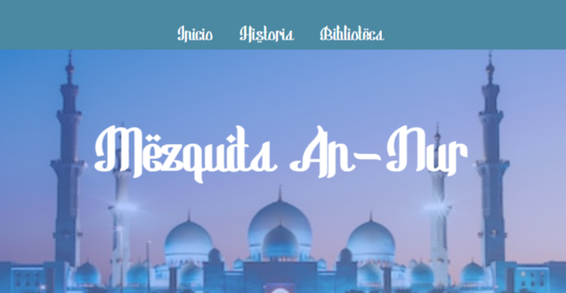
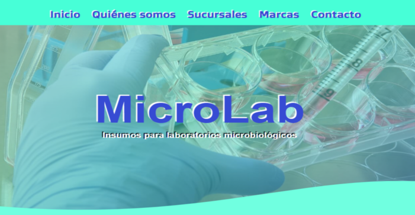
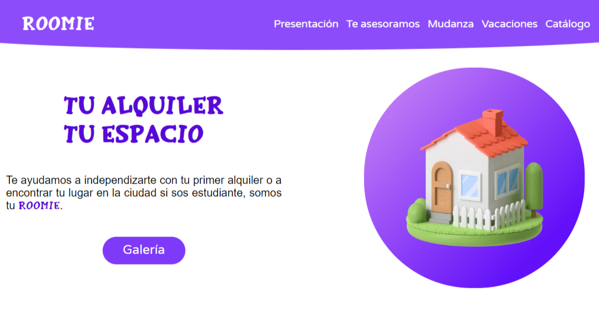
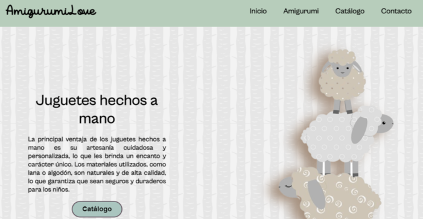

Un poco sobre mí
Me gradué en 2010 de la UTN-FRT como Técnica Superior en Industrias Alimentarias y desde el 2008 trabajo en la EEAOC (Estación Experimental Agroindustrial Obispo Colombres) pasando por algunos laboratorios de la Sección Química, desde 2011 formo parte del Laboratorio de Microbiología.
En octubre de 2021 decidí inscribirme para el primer tramo de Argentina Programa 4.0 y hacia fines de 2022 tuve la oportunidad de empezar a cursar, aprobando esta instancia en noviembre del mismo año. En enero de 2023 cursé, también en el marco de Argentina Programa, la Introducción a FrontEnd dictada por Ticmas y en mayo inicié el curso Desarrollo FrontEnd en Ada/WorkerTech con los profesores Nicolás Bogado y Julián Pacilio.
En esta última instancia fue donde pude adquirir y asimilar a fondo y de manera integral las competencias necesarias para el desarrollo web. Hoy les presento mi portfolio.
Por las mañanas
en el lab...
-
Laboratorio de
Aguas y EfluentesLimpieza de material de vidrio y determinación de: Oxígeno Disuelto (volumetría), Sólidos Totales, Sólidos Disueltos Totales, Conductividad, pH, Fósforo Total (colorimetría), Fenoles (espectrofotometría), Nitratos (espectrofotometría), Nitritos (espectrofotometría), Manganeso (espectrofotometría), Amonio (espectrofotometría), Turbidez (turbidimetría), Hierro (colorimetría), Cianuros (espectrofotometría)Colaboración en la determinación de Demanda Bioquímica de Oxígeno y Demanda Química de Oxígeno.
-
Laboratorio de
PlaguicidasDeterminación de OPP, presencia de Multiresíduos Organo Clorados, Multiresíduos Organo Fosforados y Clean Up.
-
Laboratorio de
MicrobiologíaPreparación y almacenamiento de medios de cultivo, esterilización de material de laboratorio y manejo de autoclave. Colaboración en control de stock y área compras. Revisión y redacción de instructivos dentro del Sistema de Gestión de calidad, participación en auditorías internas y externas. Manejo de Sistema 5S , Buenas Prácticas de Laboratorio, Bioseguridad y Sistema de Gestión de Calidad, con capacitación externa y a cargo de la Institución.
Portfolio
-

Trabajo Práctico n°2
One Page institucional de una Mezquita, construida usando HTML y CSS aplicando divisiones del body (header, main, sectios), gradientes, pattern, text-align y margin. (Solo para PC).
-

Trabajo Práctico n°3
One Page comercial de una empresa de venta de insumos para laboratorios de microbiología, usé HTML y CSS aplicando divisiones del body incluyendo div, fuentes, variedad de títulos, background-image, gradientes, margin y position. (Solo para PC).
-

Trabajo Práctico n°4
One Page comercial de una inmobiliaria. Usé HTML y CSS aplicando secciones bien diferenciadas, cards, flex-box, position, división de secciones, footer más elaborado, mapa. (Solo para PC).
-

Trabajo Práctico n°5
Página web con cuatro documentos HTML de un negocio que produce y vende amigurumis, aplicando también flex-box, nav, class, id, i-frame, formulario, enlace, cards, imágenes creadas por AI y box-shadow. (Solo para PC).
-
Trabajo Práctico n°6
Página web mobile-first con cuatro documentos HTML de un club de lectura, aplicando también flex-box, formulario, media queries, efectos con CSS.